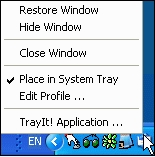
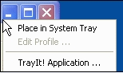

|
Introduction
TrayIt! allows to save precious Taskbar space for minimized windows. For each application which applies TrayIt! it creates a small icon in the System Tray. (System Tray area is located near the Clock). When application's window is minimized this icon represents the application on the Taskbar instead of the regular "minimized rectangle".
It is particularly useful for background tasks you typically keep running on your PC all day long like your favorite E-mail client, Real Player, etc..
Using TrayIt!
TrayIt! runs on Windows 95/98/Me, NT/2000/XP/Vista and does not
require any installation.
Simply create a new folder and place TrayIt!.exe and TrayIt!.dll there. When
started, TrayIt! will show a dialog box with a short explanation how to use it.
You may choose to load TrayIt! on system startup by selecting "Option" and
checking "Load TrayIt! on StartUp" box.
|
  |
Major application Options
You can customize TrayIt! behavior by selecting the following options from the "Edit/Options" menu:
- Load TrayIt! on StartUp - creates a shortcut to the TrayIt!
application in the user's Startup folder
- Single click action - when turned off you need to double-ckick on
icon in the System Tray to activate an application.
- Group similar tray icons for each application - TryIt will group similar windows displaying only one icon in the tray to access the group.
- Minimize when in Foreground, activate when in Background - whith
this option turned on, Clicking on the System Tray icon will minimize associated
window when only if it is in already in the foreground and put in the foreground
otherwise.
Major options for the window profile:
- Match pattern with the window title when creating a System Tray icon
- when this option is activated you can specify a pattern that TrayIt will mach
with an application window.
TrayIt! looks for a substring in a window title that matches a pattern. TrayIt!
applies patterns from left to right and stops when first match is found.
Patterns are not case sensitive. Use '|' to separate patterns, '*' and '?'
wildcards are allowed in the pattern specification. '^' as a first symbol
inverts meaning of the pattern.
Example: My Computer|Control Panel added to the explorer specification will
create a System Tray icon only this two folders.
- Minimize on start - TrayIt! will minimize the selected window on start. The effect of this option is very similar to selecting "Run:Minimized" for the application shortcut. Please use it when the latest doesn't work correctly.
- Handle SDI-type applications like MS Excel, PowerPoint or MS Project TrayIt! will correctly handle applications that have only one application window but create multiple tabs in the taskbar areacorrectly.
If you start TrayIt! manually and would like to suppress the startup dialog box,
just create a shortcut and run TrayIt! using /H switch.
TrayIt! is absolutely FREE and if you know of a good site, please
feel free to upload TrayIt!
LIABILITY DISCLAIMER -- READ BEFORE INSTALLING TRAYIT!
THE SOFTWARE IS PROVIDED "AS-IS" AND WITHOUT WARRANTY OF ANY KIND, EXPRESSED, IMPLIED OR OTHERWISE, INCLUDING AND WITHOUT LIMITATION, ANY WARRANTY OF MERCHANTABILITY OR FITNESS FOR A PARTICULAR PURPOSE. IN NO EVENT SHALL THE AUTHOR OR HIS COMPANY BE LIABLE FOR ANY SPECIAL, INCIDENTAL, INDIRECT OR CONSEQUENTIAL DAMAGES WHATSOEVER (INCLUDING, WITHOUT LIMITATION, DAMAGES FOR LOSS OF PROFITS, BUSINESS INTERRUPTION, LOSS OF INFORMATION, OR ANY OTHER LOSS) , WHETHER OR NOT ADVISED OF THE POSSIBILITY OF DAMAGE, AND ON ANY THEORY OF LIABILITY, ARISING OUT OF OR IN CONNECTION WITH THE USE OR INABILITY TO USE THIS SOFTWARE.